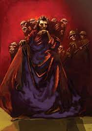
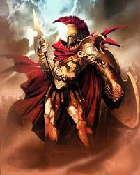
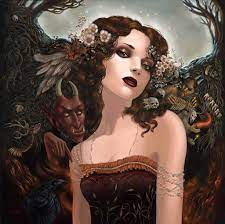
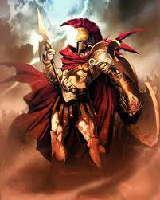
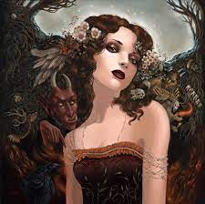

Punishment of Sisyphus
Sisyphus was the king of Corinth, son of Aeolus and Enarete. He married the Pleiad Merope, and she bore him five sons; Glaucus, Ornytion, Thersander, Almus and Porphyrion. As a ruler, he promoted navigation and commerce, though at the same time he was deceitful and violated the laws of hospitality by killing travelers and guests. He lay with his niece, Tyro, daughter of his brother, Salmoneus, in hopes of bearing children that would then kill his brother, and when Zeus abducted Aegina, daughter of the river-god Asopos, Sisyphus told her father where Zeus had taken her.
This enraged Zeus, and he then ordered Thanatos to go and collect Sisyphus' soul. However, when Thantos arrived to collect his soul, Sisyphus cleverly asked the god to demonstrate how the chains worked and as Thanatos was granting did so, Sisyphus took the opportunity to trap Thanatos in the chains instead, cheating death. With Thanatos chained, no one could die and Ares, having grown mad that battles had lost their fun because nobody lost their lives, eventually found Thanatos and released him. Before he died, however, Sisyphus told his wife that, if he were to die, she was not to bury him and upon arriving in the Underworld, he complained about this to Persephone and asked that he be allowed to return to life so as to scold his wife for not giving him a proper funeral. The goddess granted his request and upon returning to life, Sisyphus remained in Corinth until he died of old age years later.
As punishment, Sisyphus was tasked to roll a boulder up a hill with the condition being that he would able to go free once he had finished. Sisyphus tried, but everytime he got to the top of the hill, the boulder fell back down and so he continues to try again, and again, and again, forever.
 


